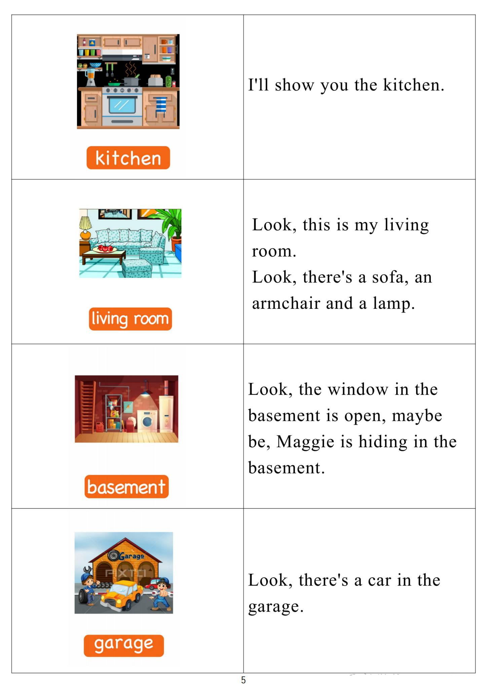

Day 4
Unit 2 · story
教材重点
网盘未提供逐日打卡原图；本级教材文件为“5.第五级单词卡.pdf”，以下重点结合单词卡与台词本整理，原文请看 Part 3。
Unit 2 · story · 7–8岁
shirt · red · orange · pink
Hello, hello, my name's Steve.
台词本为机器转写，可能存在识别误差；不等同于视频逐字原声。
详细内容
Part 1 核心词汇
必须掌握 · 4 个查看橙色每日打卡 Day 4 原图

Part 2 跟读句型与句型拓展
左侧保留台词本原句，右侧为替换练习；拓展内容不是视频逐字台词。
Hello, hello, my name's Steve.
Hello, hello, it's time to play. It's time to play in English.
Orange zigzags, purple stars, brown lines.
Pink stripes and grey spots.
Oh no, I'm late on late. Where's my football.
Part 3 台词本全文
来源：第5级台词本 · 004.Wow!Orange - Unit 2 story_2_1.pdf。以下保留网盘 PDF 的机器转写文本，仅清理了文件路径页眉和空行。
Hello, hello, my name's Steve.
Hello, hello, it's time to play. It's time to play in English.
Orange zigzags, purple stars, brown lines.
Pink stripes and grey spots.
Oh no, I'm late on late. Where's my football.
I
Ah, here it is. Yea, hey, oh, hello, boys and girls.
I'm going to play football. Yeah, come on, let's go.
Steve, stop, you have to tidy your room, not now, maggie, I'm going to play football and I don't want to
be late.
What time is it? Oh, it's old, it's old, oh, oh, no, look at my.
T shirt, hole, I need a new T shirt. Now Steve's red T shirts are everywhere.
Let's have some fun with a little muggy magic. HA, ha,
Look at my t shirt, oh, I'm going to be late for football. I need a clean t shirt.
HA, great, I've got a clean T shirt, yeah, gumps.
Hey,
Hey, this isn't my T shirt.
Look, it's got pink stripes, hey, it's a red T shirt with pink stripes, pink stripes.
Pink stripes say with me, it's a red T shirt with pink stripes.
Pink stripes.
Pink stripes, oh no, I need a red T shirt with a red T shirt. Can you see a red T shirt.
HA, HA, I can great, oh, how, how, but at least I found a red T shirt.
Oh,
Oh,
Look at my T shirt, hey, it's a red T shirt with purple stars, purple stars.
Purple stars say with me, it's a red T shirt with purple stars, purple stars.
Apple stars, oh, I just want a red T shirt.
Ah, ha, there's a red T shirt, red T shirt, how red T shirt, yes, I've got a red T shirt.
Perfect.
Yeah.
Great, hey, oh, hey, this isn't my T shirt.
/
-
/5/004.Wow!Orange - Unit 2 story_2_1.txt[2022/3/29
星期二
6:51:47]
It's got orange zigzags, yeah, it's a red T shirt with orange zigzags, orange zigzags.
Orange zigzags stay with me. It's a red T shirt with orange zigzags, orange zigzags.
Orange zigzags hole, I just want a red T shirt.
What's that?
Oh, great, I found a red T shirt. I can go and play football. Yeah?
Oh,
w
It's okay. Well, it's not okay, no, look.
It's a red T shirt with brown lines.
Brown lines.
Brown lines say with me, it's a red tee shirt with brown lines, brown lines.
Brown lines, no, I want a red T shirt.
Ah, ha, there it is perfect. Look, it's A-T shirt, hey,
Hey,
Hi. Hi.
Yeah, great, oh, no.
Look, it's a red T shirt with gray spots, gray spots.
Grey spots say with me, it's a red T shirt with gray spots.
Gray spots, gray spots, hole, this is totally crazy.
Look, I'm wearing a red T shirt with grey spots.
A red T shirt with brown lines.
A red T shirt with orange zipsaks.
A red T shirt with purple stars and a red T shirt with pink stripes.
This must be magic. Magic.
And she wants me to tidy my room, OK?
Oh,
Okay, maggie, I finished.
Thank you. Now, can I wear a Redd T shirt and go and play football? Okay?
I'm wearing a red T shirt, and I'm going, oh,
To play football. See ya. Oh, hey, don't forget your style, oh yeah. Great.